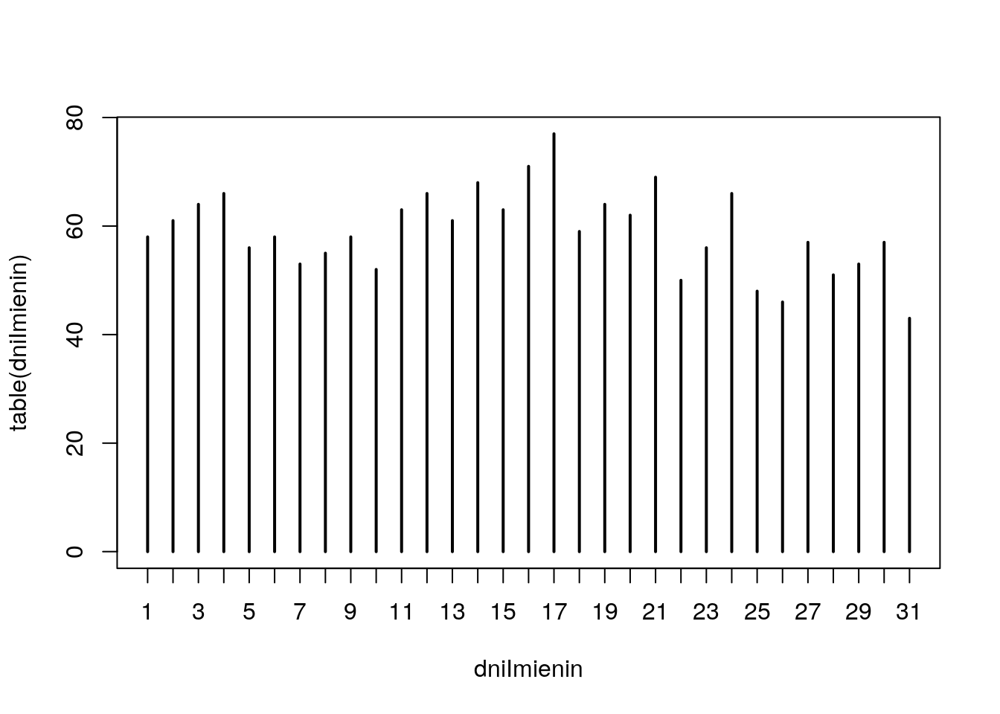
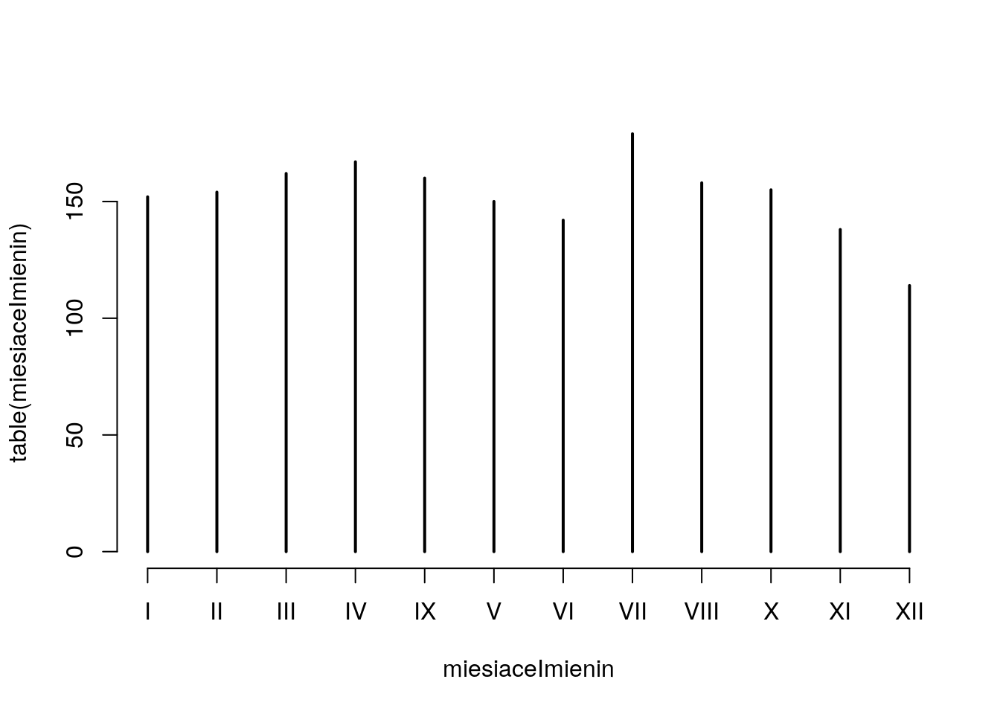
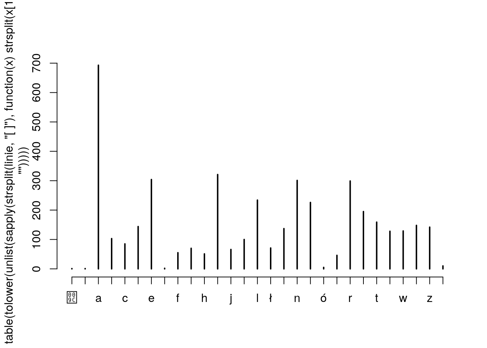

Odczytaj ramkę danych z zadania 1.13. Następnie zamień dane liczbowe z kolumny Wiek na zmienną czynnikową, dzieląc pacjentki na 3 grupy: o wieku do 45 lat, o wieku powyżej 55 lat i o wieku pośrednim. Poziomy tej zmiennej powinny nazywać się następująco: "wiek <45", "45<= wiek <=55", "wiek >55". Następnie wyświetl macierz kontyngencji dla tej zmiennej i dla pary zmiennych wieku oraz dla płci. Dodaj do macierzy sumy brzegowe. Wyświetl płaską macierz kontyngencji dla trójki zmiennych czynnikowych, dwóch powyższych i jeszcze zmiennej WIT.
wiekPoziomy = cut(daneBT$Wiek, c(0,45.5, 55.5, 100), c("wiek <45", "45<= wiek <=55", "wiek >55"))
table(wiekPoziomy)## wiekPoziomy
## wiek <45 45<= wiek <=55 wiek >55
## 7 7 10## wiekPoziomy
## wiek <45 45<= wiek <=55 wiek >55
## K 3 5 1
## M 4 2 9## wiekPoziomy
## wiek <45 45<= wiek <=55 wiek >55 Sum
## K 3 5 1 9
## M 4 2 9 15
## Sum 7 7 10 24## wiekPoziomy wiek <45 45<= wiek <=55 wiek >55
##
## K brak 1 3 1
## obecny 2 2 0
## M brak 2 2 7
## obecny 2 0 2import pandas as pd
daneBT = pd.read_csv("http://www.biecek.pl/R/dane/daneBioTech.csv",sep=';',decimal=',', header=0, encoding='iso8859_2')
daneBT = daneBT.rename(columns=lambda x: x.replace(' ', '_'))
wiekPoziomy = pd.cut(daneBT['Wiek_'],[0,45.5,55.5,100],labels=['wiek <45','45<= wiek <=55','wiek >55'],precision=0)
print(pd.crosstab(index=wiekPoziomy, columns="count"))
print(pd.crosstab(index=daneBT.iloc[:,1], columns=wiekPoziomy))
print(pd.crosstab(index=daneBT.iloc[:,1], columns=wiekPoziomy,margins=True))
print(pd.crosstab(index=[daneBT.iloc[:,1],daneBT.iloc[:,2]], columns=[wiekPoziomy]))## col_0 count
## Wiek_
## wiek <45 7
## 45<= wiek <=55 7
## wiek >55 10
## Wiek_ wiek <45 45<= wiek <=55 wiek >55
## Płeć_K-0_M-1
## K 3 5 1
## M 4 2 9
## Wiek_ wiek <45 45<= wiek <=55 wiek >55 All
## Płeć_K-0_M-1
## K 3 5 1 9
## M 4 2 9 15
## All 7 7 10 24
## Wiek_ wiek <45 45<= wiek <=55 wiek >55
## Płeć_K-0_M-1 WIT
## K brak 1 3 1
## obecny 2 2 0
## M brak 2 2 7
## obecny 2 0 2Pod adresem http://www.biecek.pl/R/dane/imieniny.txt znajduje się plik tekstowy z imionami i datami imienin dla kolejnych imion. Plik jest w dosyć kłopotliwym formacie, mianowicie w każdym wierszu w pierwszej pozycji znajduje się imię, a po nim występują daty imienin. Wszystkie te pola rozdzielone są spacją. Ponieważ jednak różne imiona mają różne liczby imienin dane te nie są w postaci tabelarycznej. Odczytaj dane tak, by każdy wiersz był jednym elementem (można np. za separator wskazać ; nie występuje on w tym pliku, cała linia zostanie więc traktowana jako jeden element). Sprawdź ile imion znajduje się w tym pliku z danymi.
Pamiętaj przy tym, że domyślnie pola tekstowe konwertowane są na zmienne czynnikowe.
Po odczytaniu danych z zadania 2.2 użyj strsplit() i sapply(), by z odczytanych danych wydobyć tylko informacje o imionach. Zlicz liczby znaków w kolejnych imionach i wyznacz macierz kontyngencji opisującą ile imion ma określoną długość. Sprawdź, które imię ma najwięcej znaków i które imiona mają najmniej znaków. Większość imion żeńskich kończy się literą ‘a’, wykorzystując tę informację zlicz liczbę żeńskich imion. Sprawdź ile liter rozpoczyna się literą A, ile B, ile C itp. Sprawdź, które imiona kończą się suffixem anna. Polskie litery występujące w imionach zamień na odpowiedniki łacińskie, np. ą na a, ź na z itp. Sprawdź, ile imion zawierało polskie litery.
Od tej reguły są wyjątki np. żeńskie imię Beatrycze i męskie Bonawentura. Dla uproszczenia zapomnijmy o wyjątkach.
linie = unlist(read.table("http://www.biecek.pl/R/dane/imieniny.txt", sep="\n", stringsAsFactors=F,fileEncoding="ISO-8859-2"))
imiona = sapply(strsplit(linie, " "), function(x) x[[1]])
dlugosciImion = nchar(imiona)
table(dlugosciImion)## dlugosciImion
## 3 4 5 6 7 8 9 10 11 12
## 9 26 79 144 139 106 65 33 8 1## V15 V125 V1185 V1244 V1245 V1256 V1265 V1343 V1581
## "Ada" "Alf" "Ewa" "Ida" "Iga" "Iwo" "Jan" "Lew" "Wit"## V1230
## "Hermenegilda"## [1] 268## \u008c A B C D E F G H I
## 1 63 47 15 26 35 16 16 25 17
## J K L Ł M N O P R S
## 30 40 30 4 48 13 9 25 33 35
## T U W Z Ż
## 15 6 42 18 1## V1222 V1275 V1285 V1348 V1382 V1606
## "Hanna" "Joanna" "Julianna" "Lilianna" "Marianna" "Zuzanna"imionaBezPolskich = chartr("ąęśćłń󟿥ʌƣŃÓŹŻ","aesclnozzAESCLNOZZ", imiona)
sum(imionaBezPolskich != imiona)## [1] 80import pandas as pd
linie = pd.read_table('http://www.biecek.pl/R/dane/imieniny.txt',header=None,encoding='iso8859_2')
imiona = [ linie[0][i].split()[0] for i in range(linie.shape[0]) ]
dlugosciImion = [ len(imiona[i]) for i in range(linie.shape[0]) ]
df = pd.DataFrame({'imiona':imiona,'dlugosciImion' : dlugosciImion})
print(pd.crosstab(index=df["dlugosciImion"], columns="count"))
print(df[df.dlugosciImion == df.dlugosciImion.min(axis=0)])
print(df[df.dlugosciImion == df.dlugosciImion.max(axis=0)])
df['zenskieImiona'] = df['imiona'].str.extract('(a$)', expand=True)
print(df.dropna(subset=['zenskieImiona']).shape[0])
pierwszaLitera = [ imiona[i][0] for i in range(linie.shape[0]) ]
d = pd.DataFrame({'pierwszaLitera':pierwszaLitera})
print(d['pierwszaLitera'].value_counts())
df['anna'] = df['imiona'].str.extract('(anna$)', expand=True)
print(df.dropna(subset=['anna'])['imiona'])
df['imio'] = [ df['imiona'][i].translate(str.maketrans("ąęśćłń󟿥ʌƣŃÓŹŻ", "aesclnozzAESCLNOZZ")) for i in range(linie.shape[0])]
print(sum(df['imiona'] != df['imio']))## col_0 count
## dlugosciImion
## 3 9
## 4 26
## 5 79
## 6 144
## 7 139
## 8 106
## 9 65
## 10 33
## 11 8
## 12 1
## imiona dlugosciImion
## 4 Ada 3
## 24 Alf 3
## 184 Ewa 3
## 243 Ida 3
## 244 Iga 3
## 255 Iwo 3
## 264 Jan 3
## 342 Lew 3
## 580 Wit 3
## imiona dlugosciImion
## 229 Hermenegilda 12
## 268
## A 63
## M 48
## B 47
## W 42
## K 40
## E 35
## S 35
## R 33
## J 30
## L 30
## D 26
## P 25
## H 25
## Z 18
## I 17
## F 16
## G 16
## C 15
## T 15
## N 13
## O 9
## U 6
## Ł 4
## 1
## Ż 1
## Name: pierwszaLitera, dtype: int64
## 221 Hanna
## 274 Joanna
## 284 Julianna
## 347 Lilianna
## 381 Marianna
## 605 Zuzanna
## Name: imiona, dtype: object
## 80Po odczytaniu danych z powyższego zadania sprawdź, kto ma imieniny 30 października. Wyświetl te imiona w porządku leksykograficznym. Sprawdź, które imię ma najczęściej imieniny. Sprawdź, w którym dniu roku najwięcej imion ma imieniny. Sprawdź, w którym dniu miesiąca a następnie, w którym miesiącu najwięcej imion ma imieniny.
Na bazie wszystkich imion zrób analizę używalności poszczególnych liter. Która litera jest najpopularniejsza? Dlaczego?
## V127 V126 V1154 V1307 V1457
## "Alfons" "Alfonsyna" "Edmund" "Klaudiusz" "Przemysław"
## V1600
## "Zenobia"liczbyImienin = sapply(strsplit(linie, " "), function(x) length(x)-1)
linie[liczbyImienin==max(liczbyImienin)]## V1265
## "Jan 10.I 17.I 23.I 31.I 4.II 5.II 8.II 5.III 8.III 17.III 27.III 28.III 30.III 13.IV 6.V 10.V 12.V 15.V 21.V 22.V 23.V 24.V 27.V 12.VI 16.VI 24.VI 26.VI 9.VIII 13.VIII 19.VIII 20.VIII 29.VIII 3.IX 11.IX 28.IX 1.X 9.X 23.X"datyImienin = sapply(strsplit(linie, " "), function(x) x[-1])
liczebnosci = table(unlist(datyImienin))
names(liczebnosci[liczebnosci == max(liczebnosci)])## [1] "14.II"dniImienin = unlist(sapply(strsplit(linie, "[ .]"), function(x) x[seq(2,length(x),2)]))
miesiaceImienin = unlist(sapply(strsplit(linie, "[ .]"), function(x) x[seq(3,length(x),2)]))
table(dniImienin)## dniImienin
## 1 10 11 12 13 14 15 16 17 18 19 2 20 21 22 23 24 25 26 27 28 29 3 30 31
## 58 52 63 66 61 68 63 71 77 59 64 61 62 69 50 56 66 48 46 57 51 53 64 57 43
## 4 5 6 7 8 9
## 66 56 58 53 55 58## miesiaceImienin
## I II III IV IX V VI VII VIII X XI XII
## 152 154 162 167 160 150 142 179 158 155 138 114


import pandas as pd
linie = pd.read_table('http://www.biecek.pl/R/dane/imieniny.txt',header=None,encoding='iso8859_2')
linie['imiona'] = [ linie[0][i].split()[0] for i in range(linie.shape[0]) ]
linie['w1'] = linie.iloc[:,0].str.extract('( 30.X$)', expand=True).dropna()
linie['w2'] = linie.iloc[:,0].str.extract('( 30.X )', expand=True).dropna()
urodzeni30X = linie.dropna(subset=['w1'])['imiona'].tolist() + linie.dropna(subset=['w2'])['imiona'].tolist()
print(sorted(urodzeni30X))
w = linie.iloc[:,0]
linie['urodziny'] = [ w[i].split(' ')[1:] for i in range(linie.shape[0]) ]
linie['liczbyImienin'] = [ len(linie['urodziny'][i]) for i in range(linie.shape[0]) ]
print(linie[linie.liczbyImienin == linie.liczbyImienin.max(axis=0)])
d = pd.DataFrame()
d['urodz'] = [y for x in linie['urodziny'].tolist() for y in x]
print(d['urodz'].value_counts(sort=False))
d = d.join(d['urodz'].str.split('.', 1,expand=True).rename(columns={0:'dniImienin',1:'miesiaceImienin'}))
print(d['dniImienin'].value_counts(sort=False))
print(d['miesiaceImienin'].value_counts(sort=False))
import matplotlib.pyplot as plt
fig = plt.figure(figsize=(14,6))
ax1 = fig.add_subplot(1,2,1)
ax2 = fig.add_subplot(1,2,2)
ax1.vlines(d['dniImienin'].value_counts(sort=False).index.values, [0], d['dniImienin'].value_counts(sort=False),lw=2,color='C0')
ax2.vlines(d['miesiaceImienin'].value_counts(sort=False).index.values, [0], d['miesiaceImienin'].value_counts(sort=False),lw=2,color='C0')
plt.tight_layout()
plt.savefig('R02_1.png')
u = [linie['imiona'][i] for i in range(linie.shape[0]) ]
litery = ','.join(u).replace(',', '').lower()
D = pd.DataFrame({'litery':list(litery)})
Y = D['litery'].value_counts(sort=False)
X = D['litery'].value_counts(sort=False).index.values
fig = plt.figure(figsize=(14,6))
ax = fig.add_subplot(1,1,1)
ax.vlines(X, [0], Y, lw=2, color='C0')
plt.tight_layout()
plt.savefig('R02_2.png')## /home/krz/.local/lib/python3.6/site-packages/matplotlib/backends/backend_agg.py:211: RuntimeWarning: Glyph 140 missing from current font.
## font.set_text(s, 0.0, flags=flags)
## /home/krz/.local/lib/python3.6/site-packages/matplotlib/backends/backend_agg.py:211: RuntimeWarning: Glyph 156 missing from current font.
## font.set_text(s, 0.0, flags=flags)
## /home/krz/.local/lib/python3.6/site-packages/matplotlib/backends/backend_agg.py:176: RuntimeWarning: Glyph 140 missing from current font.
## font.load_char(ord(s), flags=flags)
## /home/krz/.local/lib/python3.6/site-packages/matplotlib/backends/backend_agg.py:176: RuntimeWarning: Glyph 156 missing from current font.
## font.load_char(ord(s), flags=flags)
## ['Alfons', 'Alfonsyna', 'Edmund', 'Klaudiusz', 'Przemysław', 'Zenobia']
## 0 ... liczbyImienin
## 264 Jan 10.I 17.I 23.I 31.I 4.II 5.II 8.II 5.III 8... ... 38
##
## [1 rows x 6 columns]
## 4
## 2.VII 5
## 21.VI 8
## 12.IX 5
## 5.III 6
## ..
## 7.VI 7
## 5.VII 7
## 6.VIII 5
## 10.VII 6
## 15.V 5
## Name: urodz, Length: 367, dtype: int64
## 4
## 23 56
## 28 51
## 15 63
## 10 52
## 20 62
## 30 57
## 14 68
## 31 43
## 16 71
## 19 64
## 27 57
## 3 64
## 18 59
## 17 77
## 24 66
## 5 56
## 2 61
## 22 50
## 25 48
## 6 58
## 11 63
## 8 55
## 9 58
## 1 58
## 12 66
## 26 46
## 7 53
## 13 61
## 4 66
## 21 69
## 29 53
## Name: dniImienin, dtype: int64
## II 154
## XI 138
## VI 142
## IX 160
## XII 114
## I 152
## III 162
## VII 179
## V 150
## VIII 158
## X 155
## IV 167
## Name: miesiaceImienin, dtype: int64Wykresy.
Wykresy.
Odczytaj ramkę danych z zadania 1.13. Następnie używając funkcji by() wyświetl podsumowanie zmiennej Wiek osobno dla grupy WIT=brak i dla grupy WIT=obecny.
## WIT: brak
## Min. 1st Qu. Median Mean 3rd Qu. Max.
## 28.00 51.25 55.50 53.12 58.00 70.00
## --------------------------------------------------------
## WIT: obecny
## Min. 1st Qu. Median Mean 3rd Qu. Max.
## 24.00 38.00 46.50 45.38 54.25 59.00import pandas as pd
daneBT = pd.read_csv("http://www.biecek.pl/R/dane/daneBioTech.csv",sep=';',decimal=',', header=0, encoding='iso8859_2')
daneBT = daneBT.rename(columns=lambda x: x.replace(' ', '_'))
print(daneBT.groupby(['WIT'])['Wiek_'].describe())## count mean std min 25% 50% 75% max
## WIT
## brak 16.0 53.125 9.653151 28.0 51.25 55.5 58.00 70.0
## obecny 8.0 45.375 12.023043 24.0 38.00 46.5 54.25 59.0Wyznacz wyznacznik, wartości własne oraz wektory własne macierzy: \[\begin{bmatrix} 1 & 5 & 3\\ 2 & 0 & 5\\ 1 & 2 & 1 \end{bmatrix}.\]
## [1] 17## eigen() decomposition
## $values
## [1] 6.0790256 -3.2070365 -0.8719891
##
## $vectors
## [,1] [,2] [,3]
## [1,] -0.3638991 0.1602696 -0.3467453
## [2,] -0.5472752 -0.6900345 -0.1392322
## [3,] -0.7537024 0.7058088 0.9275678import numpy as np
mat = np.array(np.mat('1,2,1; 5,0,2; 3,5,1'))
print(np.linalg.det(mat))
_, eigenvectors = np.linalg.eig(mat)
print(eigenvectors)## 17.0
## [[-0.3638991 -0.34674535 0.16026961]
## [-0.54727525 -0.13923216 -0.69003446]
## [-0.75370236 0.92756783 0.70580882]]Używając funkcji outer() zbuduj i wyświetl na ekranie tabliczkę mnożenia liczb od 1 do 10.
## [,1] [,2] [,3] [,4] [,5]
## [1,] "1*1=1" "1*2=2" "1*3=3" "1*4=4" "1*5=5"
## [2,] "2*1=2" "2*2=4" "2*3=6" "2*4=8" "2*5=10"
## [3,] "3*1=3" "3*2=6" "3*3=9" "3*4=12" "3*5=15"
## [4,] "4*1=4" "4*2=8" "4*3=12" "4*4=16" "4*5=20"
## [5,] "5*1=5" "5*2=10" "5*3=15" "5*4=20" "5*5=25"## [[ 1 2 3 4 5]
## [ 2 4 6 8 10]
## [ 3 6 9 12 15]
## [ 4 8 12 16 20]
## [ 5 10 15 20 25]]Odczytaj ramkę danych z zadania 1.13. Następnie wyznacz histogram dla zmiennej Wiek i zapisz go do pliku hist.pdf w wymiarach \(5\times5\) cali.
Pod adresem http://money.pl/ można odczytać aktualne wartości indeksów giełdowych. Wczytaj zawartość tej strony do programu R, a następnie wyciągnij z niej dane o nazwie i wartościach indeksów. Zauważ, że w treści HTML tabela z nazwami i wartościami indeksów rozpoczyna się od linii <table id="tgpw" class="tabela">.